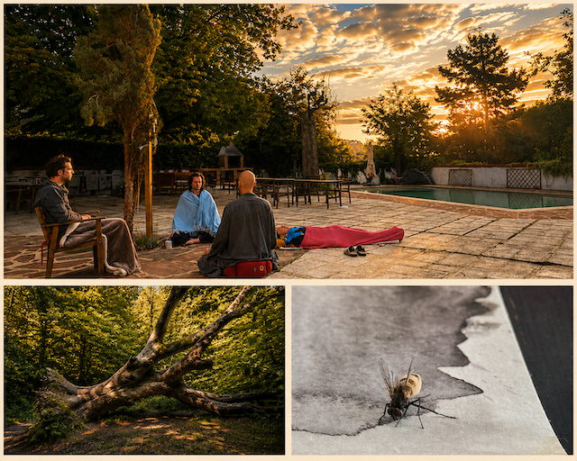
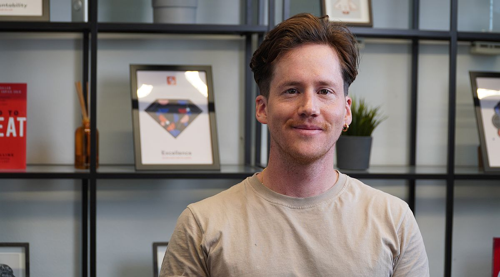

Agapic Chants
Agapic Chants
Retreats
Now and then, a group does this work together over several days. Same work as a session, more time, collaborating with other teachers, and we make chants as a group.


How a Retreat Goes
Days open with singing and quiet. Nothing to prepare, and no experience needed.
The same accompaniment as a session, in a group — with other teachers bringing their own practices alongside mine.
What comes up becomes something the group can sing, and you take it home with you.
A men's retreat, and an inquiry rather than a teaching: what is power, what blocks it in us, how has it been used and misused against us. Dialogue, Jungian practice, meditation, and chanting, over three days with three facilitators.
I came to this retreat with skepticism, and was not particularly excited about meeting other men or hearing their stories. Everything was welcome: my skepticism and distrust had a place too, and that allowed for meaningful openings to unfold within me.
The bond that was formed between strangers, men less and less so, humans evermore, in such a short time span was astounding and touching.

Get on the list for the next one
Nothing is scheduled right now. Tell me you're interested and I'll write when the next one is set. If you'd rather start smaller, a session is the shorter version of the same thing.
About Nathan
I've been writing songs since I was 13, and I've spent the years since split between music and a quieter track: a doctorate in the sociology of religion, time in monasteries, and training in how people work through what's hard. I make songs with people, and then we sing them.

Even across the darkness, we can hear each other sing.
If they've meant something to you, your support helps make more of them.